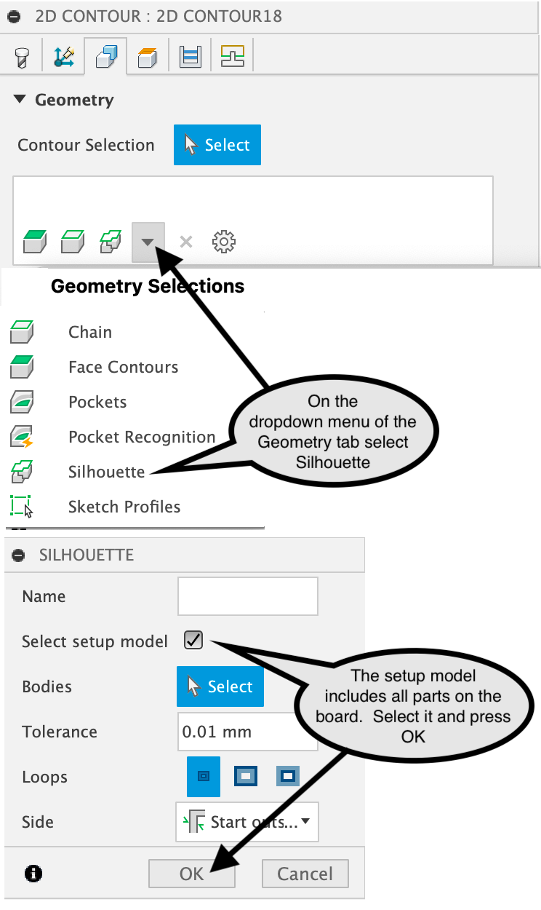

Manufacturing Model
The post-mapping task Manufacturing Model provides a convenient way to create a manufacturing model (MM) and setup for the selected mapped board.
Using this task has the following advantages:
create or switch to a MM associated with a mapped board in a created map
changes to the mapped board will continue to be reflected in the MM
optionally create or modify a setup for the selected mapped board
task runs on hidden maps (visibility icon off), allowing the map, MMs and associated toolpaths to be preserved
when a map is deleted in the design, all corresponding MMs and toolpaths are deleted
{kind=link}
The setup includes a model of all components mapped on a board. Stock dimensions are defined using From Solid mode, which matches the board dimensions.
Toolpath Creation
Shown in this example is a 2D Contour toolpath with geometry defined as a silhouette of all components on the board, the model in this default setup. You may want to add Tabs and Multiple Depths under the Passes tab. Use silhouette selection when you want to machine all the way around a component, especially when dealing with overhangs or complex shapes where conventional contour selection methods are not suitable.
{kind=link}